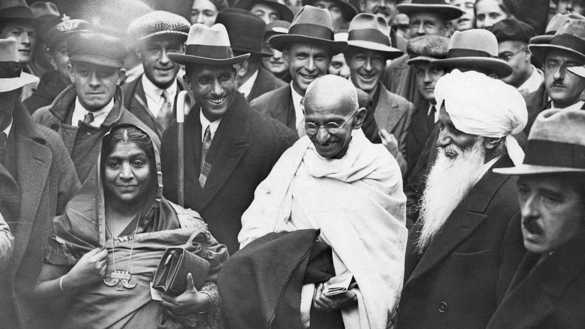

Mahatma Gandhi
The father of India

Here's a time line of Mahatma Gandhi's life:
- 1869 - October 2, Mohandas Gandhi was born in Porbandar, India
- 1876 - Gandhi moves with his family to Rajkot, India
- 1888 - Gandhi sails to England so that he can study law
- 1891 - Gandhi returns to India and begins to practice law
- 1893 - Gandhi accepts a job in South Africa
- 1891 - Gandhi returns to India and begins to practice law Gandhi decides to open a law office in Johannesberg, South Africa
- 1906 - Gandhi organizes his first protest against anti-Indian laws in South Africa
- 1907 - The Boer Republic Transvaal, now under the control of the British, attempts to register all Indians as members; Gandhi and others refuse to register. Their resistance efforts mark the first use of nonviolent non-cooperation by the Indian minority in South Africa, soon calledsatyagraha, or "soul-force."
- 1908 - Gandhi is imprisoned in South Africa
- 1915 - Gandhi returns to India
- 1922 - After a big trial, Gandhi is sentenced to six years in jail
- 1930 - Gandhi has to go to jail for breaking India's Salt Laws
- 1932 - Gandhi fasts to protest treatment of Untouchables
- 1934 - He launches the All Indian Village Industries Association
- 1942 - Gandhi begins the nationwide "Quit India" movement
- 1944 - Gandhi's wife dies at age seventy-four
- 1947 - India gets its independence from the British
- 1948 - On January 30, Gandhi is killed at a prayer meeting in Dehli
-- Indian Prime Minister Jawaharlal Nehru